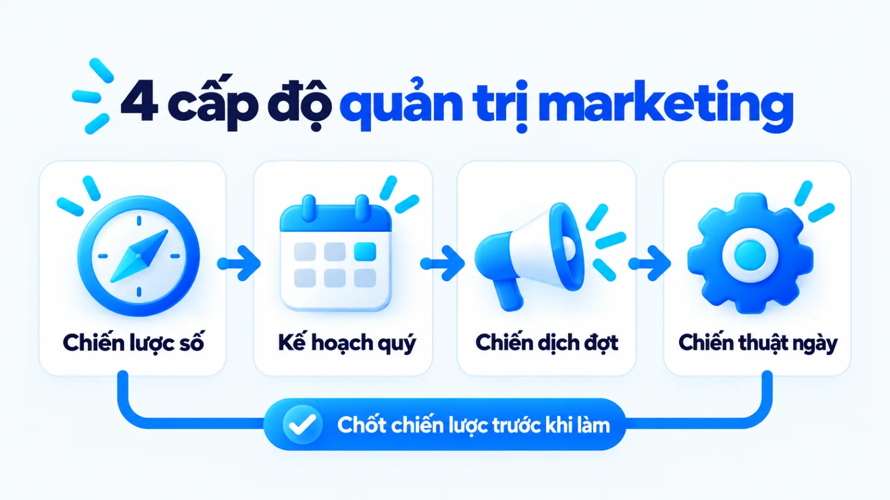
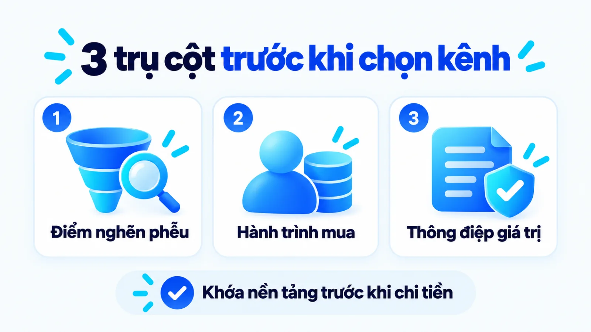
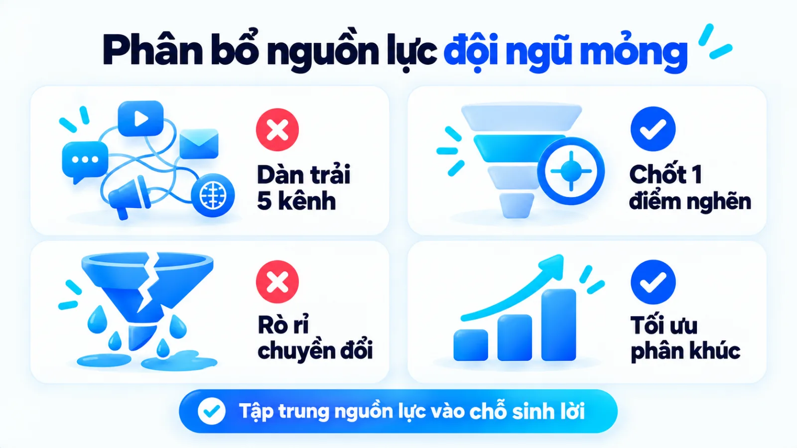
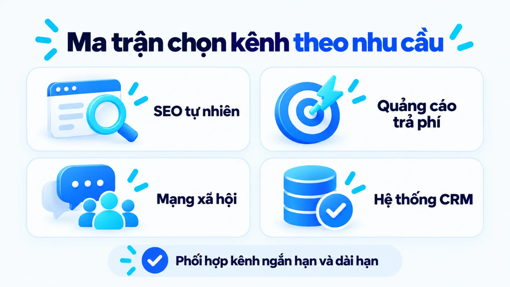
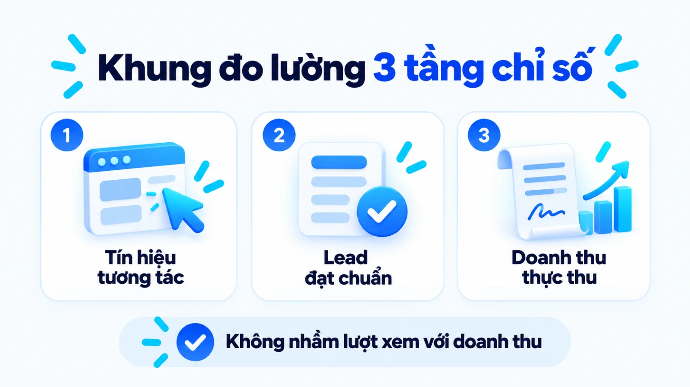
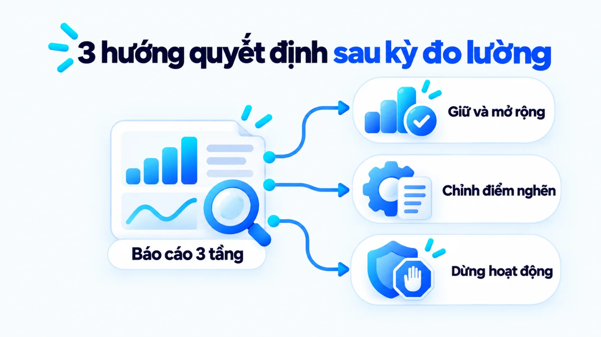
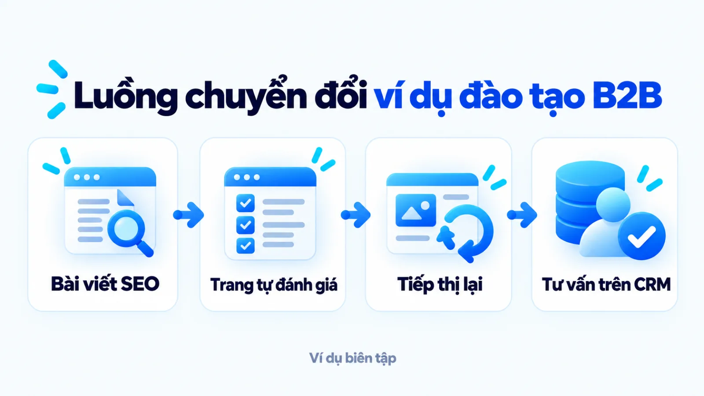

Chiến lược Digital Marketing là gì, cách xây cho SME
Chiến lược Digital Marketing là hệ thống các quyết định trọng tâm về mục tiêu kinh doanh, phân khúc khách hàng, giá trị cung cấp, vai trò của từng kênh số và nguyên tắc phân bổ nguồn lực để tạo ra kết quả đo lường được. Với doanh nghiệp vừa và nhỏ, khi ngân sách và nhân sự hạn hẹp, việc chạy theo nhiều nền tảng cùng lúc mà chưa xác định đúng điểm nghẽn chuyển đổi thường làm chi phí đội lên nhưng doanh thu vẫn thất thường. Vì vậy, thay vì gom danh sách công cụ hay lịch đăng bài, người phụ trách cần căn cứ rõ ràng để chọn việc ưu tiên và chủ động từ chối các hoạt động dàn trải. Tôi là Lê Tuấn Việt, Marketing Leader tại TAKI Group. Trong bài viết này, tôi làm rõ cách phân biệt cấp chiến lược với kế hoạch thực thi, các bước chốt điểm nghẽn để phân vai cho kênh và cách đọc số liệu gắn với kết quả kinh doanh thật.
- Đăng ngày
- Cập nhật

Tóm tắt nhanh
- Chiến lược Digital Marketing là chuỗi quyết định chọn mục tiêu, phân khúc khách hàng, thông điệp giá trị và vai trò kênh, đồng thời chỉ rõ những việc doanh nghiệp chủ động không làm khi nguồn lực hạn hẹp.
- Trước khi mở thêm kênh hoặc tăng ngân sách quảng cáo, doanh nghiệp cần chốt rõ ba quyết định nền tảng gồm điểm nghẽn kinh doanh, hành trình mua của khách và thông điệp cốt lõi.
- Quy trình xây dựng chiến lược gồm bốn bước có đầu ra kiểm chứng được: đối chiếu hiện trạng với mục tiêu, khoanh vùng điểm nghẽn ưu tiên, phân vai cho kênh cùng dữ liệu và chốt khung chỉ số đánh giá định kỳ.
- Khung đo lường phải tách bạch ba tầng từ tín hiệu tương tác bề mặt, hành vi đạt chuẩn đến doanh thu thực tế để tránh nhầm lượt truy cập với hiệu quả tài chính.
Mục lục bài viết8 phần
Chiến lược Digital Marketing là gì?
Chiến lược Digital Marketing là khung quyết định dài hạn giúp doanh nghiệp kết nối mục tiêu doanh thu với phân khúc khách hàng ưu tiên, thông điệp giá trị và vai trò của từng kênh trực tuyến. Thay vì liệt kê các công cụ đang thịnh hành, chiến lược xác định rõ doanh nghiệp sẽ tập trung vào đâu và chủ động từ chối những hoạt động nào khi ngân sách cùng nhân sự có hạn.
Theo tài liệu hướng dẫn chuyên môn của Tiến sĩ Dave Chaffey trên Smart Insights, bản chất của hệ thống Digital Marketing là việc đạt được các mục tiêu tiếp thị thông qua ứng dụng truyền thông số, dữ liệu và công nghệ. Khi đặt thêm tầng chiến lược lên trên, trọng tâm không nằm ở thao tác cài đặt từng nền tảng, mà nằm ở mối quan hệ nhân quả giữa bài toán doanh thu với lựa chọn kênh và cơ chế kiểm soát dữ liệu.

Những quyết định cốt lõi của một chiến lược
Trong bài báo học thuật đăng trên Harvard Business Review năm 1996, Giáo sư Michael E. Porter chỉ ra rằng hiệu quả vận hành là thực hiện các hoạt động tương tự nhưng tốt hơn đối thủ, còn định vị chiến lược là thực hiện các hoạt động khác biệt hoặc vận hành theo cách khác. Nhiều doanh nghiệp nhầm lẫn việc áp dụng các công cụ quản trị để cải thiện vận hành với việc có một chiến lược thực sự.
Tại nhiều SME (doanh nghiệp vừa và nhỏ), biểu hiện phổ biến của sự nhầm lẫn này là gom việc chạy quảng cáo, xây kênh video ngắn và viết bài website thành một danh sách rồi gọi đó là chiến lược marketing online. Khi không có quyết định đánh đổi, đội ngũ sẽ chia mỏng ngân sách cho mọi mặt trận nhưng không kênh nào đủ độ sâu để vượt qua ngưỡng cạnh tranh. Chạy nhiều công cụ chưa phải là có chiến lược. Doanh nghiệp có thể tham khảo cách đánh đổi nguồn lực qua bài phân tích chiến lược marketing của Nón Sơn.
Chiến lược, kế hoạch, chiến dịch và chiến thuật khác nhau thế nào
Để tránh đồng nhất định hướng dài hạn với lịch đăng bài hàng tuần hoặc bảng phân bổ ngân sách quảng cáo, người phụ trách cần tách bạch bốn cấp độ quản trị từ chiến lược, lập kế hoạch marketing, chiến dịch cho đến chiến thuật. Bảng dưới đây đối chiếu bốn cấp độ này theo quyết định trọng tâm và đầu ra kiểm chứng được.
| Cấp độ quản trị | Quyết định trọng tâm và phạm vi | Đầu ra kiểm chứng được |
|---|---|---|
| Chiến lược | Chọn mục tiêu kinh doanh, phân khúc ưu tiên, định vị giá trị và vai trò từng kênh trong 6 đến 12 tháng | Khung định hướng phân bổ nguồn lực, nguyên tắc ưu tiên và danh sách việc chủ động không làm |
| Kế hoạch | Cụ thể hóa mục tiêu thành lộ trình theo quý hoặc tháng, phân bổ ngân sách, lịch trình và nhân sự phụ trách | Bảng kế hoạch hành động, định mức ngân sách theo kênh và chỉ số mục tiêu từng giai đoạn |
| Chiến dịch | Tổ chức đợt truyền thông có chủ đề thống nhất, mốc bắt đầu và kết thúc rõ ràng nhằm giải quyết mục tiêu ngắn hạn | Bản đề xuất chiến dịch, thông điệp chủ đạo, tài sản sáng tạo và báo cáo nghiệm thu sau đợt chạy |
| Chiến thuật | Thực thi các nghiệp vụ cụ thể trên từng điểm chạm như tối ưu từ khóa, thiết lập nhóm quảng cáo hay gửi thư điện tử | Bài viết hoàn chỉnh, mẫu quảng cáo đang phân phối, kịch bản chăm sóc và số liệu vận hành hàng ngày |
Giới hạn khi đọc bảng: ranh giới thời gian từ 6 đến 12 tháng chỉ mang tính tham chiếu cho chu kỳ hoạch định phổ biến. Với những ngành hàng có tính mùa vụ cao hoặc chu kỳ sản phẩm ngắn, kỳ rà soát kế hoạch và chiến dịch cần co ngắn lại theo tốc độ luân chuyển dòng tiền thực tế của doanh nghiệp.
Những quyết định cần chốt trước khi chọn kênh
Trước khi chọn kênh hay phân bổ ngân sách quảng cáo, doanh nghiệp vừa và nhỏ cần chốt ba quyết định nền tảng gồm mục tiêu kinh doanh gắn với điểm nghẽn hiện tại, hành trình ra quyết định của phân khúc khách hàng ưu tiên và thông điệp giá trị chủ đạo. Khi ba trụ cột này chưa rõ, việc mở thêm kênh mới chỉ làm phân tán nguồn lực mà không giải quyết được nguyên nhân khiến doanh thu chững lại. Phân tích chiến lược marketing của Cocoon minh họa rõ cách giải bài toán niềm tin và rút bài học có điều kiện.
- Mục tiêu và điểm nghẽn: Đầu vào là doanh thu, biên lợi nhuận và tỷ lệ chuyển đổi từng khâu; đầu ra là mục tiêu định lượng có kỳ đo rõ ràng.
- Khách hàng và hành trình: Đầu vào là dữ liệu khách tự khai và dữ liệu hành vi; đầu ra là bản đồ điểm chạm ưu tiên của phân khúc sinh lời cao.
- Giá trị và thông điệp: Đầu vào là lợi thế thực tế so với phương án thay thế; đầu ra là thông điệp cốt lõi và góc tiếp cận thống nhất trên các kênh.
Mục tiêu kinh doanh và điểm nghẽn cần xử lý
Mọi chiến lược marketing online hiệu quả đều bắt đầu bằng việc chẩn đoán đúng khâu đang làm thất thoát doanh thu. Tôi ưu tiên xác định điểm nghẽn lớn nhất trong phễu hiện tại trước khi bàn đến chuyện tăng ngân sách truyền thông. Nếu tỷ lệ chuyển đổi tại trang đích đang rất thấp do thông tin sản phẩm mập mờ, việc đổ thêm tiền vào quảng cáo chỉ làm tăng tốc độ đốt ngân sách mà không mang lại thêm khách hàng đạt chuẩn.
Khách hàng, hành trình và hành động mục tiêu
Thay vì mô tả khách hàng bằng những nét nhân khẩu học chung chung như độ tuổi hay giới tính, chiến lược cần làm rõ họ dùng thông tin gì để ra quyết định và rào cản nào khiến họ trì hoãn việc mua hàng. Ở bước này, việc kết hợp zero-party data và first-party data (dữ liệu khách hàng chủ động chia sẻ và dữ liệu hành vi thu thập trực tiếp trên kênh của doanh nghiệp) giúp đội ngũ nhìn thấy hành trình mua thực tế.

Tại mỗi chặng của hành trình đó, người lập chiến lược phải gắn một hành động mục tiêu cụ thể mà doanh nghiệp muốn người dùng thực hiện. Theo phân loại của Nielsen Norman Group, macro conversions (chuyển đổi vĩ mô) là những hành động đóng góp trực tiếp vào mục tiêu chính của doanh nghiệp như đặt hàng hoặc gửi yêu cầu báo giá hợp lệ. Khi chưa chốt được hành động đích này, hệ thống kênh sẽ không có tiêu chuẩn chung để tối ưu.
Giá trị cung cấp và thông điệp chủ đạo
Sau khi biết rõ mình nói với ai và cần họ làm gì, quyết định thứ ba là trả lời câu hỏi vì sao khách hàng nên chọn giải pháp của doanh nghiệp thay vì đối thủ. Từ giá trị cốt lõi dựa trên năng lực vận hành có thật, đội ngũ mới tiến hành xác định content angle (góc tiếp cận nội dung) cho từng nhóm vấn đề và chuẩn hóa brand voice và tone of voice (giọng thương hiệu và sắc thái biểu đạt) xuyên suốt các điểm chạm.
Cách xây dựng chiến lược Digital Marketing theo bốn bước
Quy trình xây dựng chiến lược Digital Marketing cho doanh nghiệp vừa và nhỏ gồm bốn bước tuần tự: đối chiếu hiện trạng với mục tiêu kinh doanh, chọn phân khúc cùng điểm nghẽn ưu tiên, phân vai cho hệ thống kênh kèm dữ liệu và chốt khung chỉ số đánh giá định kỳ. Mỗi bước phải tạo ra một đầu ra văn bản cụ thể để làm căn cứ kiểm soát trước khi triển khai bước tiếp theo.
Bước 1: Đối chiếu hiện trạng với mục tiêu kinh doanh
Thu thập toàn bộ số liệu nền trong tối thiểu 3 đến 6 tháng gần nhất gồm doanh thu theo dòng sản phẩm, biên lợi nhuận gộp, tỷ lệ chuyển đổi qua từng bước và chi phí thu hút khách hàng trên các kênh đang chạy. Việc đặt mục tiêu kỳ tới cạnh năng lực hiện tại giúp doanh nghiệp biết mình cần tăng trưởng từ việc mở rộng tệp khách mới hay cải thiện tỷ lệ mua lặp lại. Góc nhìn từ chiến lược marketing của Lifebuoy làm rõ cách kết hợp bao bì và phân phối để duy trì mua lặp lại.
Về định mức ngân sách, khảo sát Gartner 2025 CMO Spend Survey công bố tháng 5/2025 trên 402 CMO (giám đốc marketing) và lãnh đạo marketing tại Bắc Mỹ, Vương quốc Anh cùng châu Âu (phần lớn ở doanh nghiệp có doanh thu năm trên 1 tỷ USD) cho thấy ngân sách marketing trung bình giữ ở mức 7,7% tổng doanh thu công ty.
Tới thông cáo kết quả khảo sát Gartner 2026 CMO Spend Survey do Gartner công bố tháng 5/2026 đo lường phân bổ ngân sách của nhóm giám đốc marketing tại khu vực Bắc Mỹ và châu Âu, tỷ trọng này chỉ nhích nhẹ lên 7,8% tổng doanh thu doanh nghiệp. Số liệu quốc tế phản ánh xu hướng thắt chặt chi tiêu ở các tập đoàn lớn, nhưng SME tại Việt Nam không nên áp máy móc mức 7,7% hay 7,8% mà phải tính từ biên lợi nhuận và dòng tiền thực tế.
Đầu ra: bảng đối chiếu số liệu nền với mục tiêu doanh thu kỳ tới và hạn mức ngân sách tối đa cho phép trên mỗi đơn hàng thành công.
Bước 2: Chọn phân khúc và điểm nghẽn ưu tiên
Từ bảng đối chiếu hiện trạng, chọn ra một phân khúc khách hàng có biên lợi nhuận tốt nhất hoặc thời gian chốt đơn ngắn nhất để tập trung nguồn lực trong kỳ kế hoạch. Khi dám ghi rõ những nhóm khách hàng chưa ưu tiên phục vụ trong quý này, đội ngũ quy mô mỏng mới có đủ thời gian xử lý dứt điểm nút thắt chuyển đổi lớn nhất của tệp chủ lực.

Đầu ra: biên bản xác định chân dung phân khúc ưu tiên, danh sách điều kiện loại trừ và giả thuyết giải quyết điểm nghẽn chính.
Bước 3: Phân vai cho kênh, nội dung và dữ liệu
Giao cho mỗi kênh số một nhiệm vụ rõ ràng trên hành trình khách hàng thay vì bắt mọi kênh đều phải tự ra đơn hàng ngay ở lần chạm đầu tiên. Khung lập kế hoạch RACE (bốn giai đoạn gồm tiếp cận, tương tác, chuyển đổi và gắn kết) do Tiến sĩ Dave Chaffey và Smart Insights cập nhật năm 2024 cung cấp cấu trúc để doanh nghiệp tổ chức hệ thống truyền thông đa kênh kèm luồng bàn giao dữ liệu mạch lạc.
Đầu ra: sơ đồ phân vai hệ thống kênh theo bốn giai đoạn hành trình mua kèm luồng thu thập và bàn giao dữ liệu khách hàng.
Bước 4: Chốt chỉ số, kỳ đánh giá và điều kiện điều chỉnh
Thiết lập bộ KPI (chỉ số đánh giá hiệu quả công việc) gắn trực tiếp với vai trò đã phân cho từng kênh, đồng thời quy định rõ lịch đọc kết quả theo tuần, tháng và quý. Một bản chiến lược chỉ sống được trong vận hành khi người thực thi biết rõ ngưỡng số liệu nào thì được giữ nguyên, ngưỡng nào phải điều chỉnh thông điệp và ngưỡng nào bắt buộc dừng ngân sách.
Đầu ra: bảng chỉ số theo dõi định kỳ kèm quy tắc ra quyết định giữ, tối ưu hoặc dừng cho từng hoạt động trên kênh.
Cách chọn kênh Digital Marketing khi nguồn lực hạn chế
Khi ngân sách và nhân sự có hạn, doanh nghiệp vừa và nhỏ cần chọn kênh dựa trên trạng thái nhu cầu tìm kiếm của khách hàng, thời gian thu hồi vốn yêu cầu và năng lực vận hành nội dung thực tế. Thay vì dàn trải mỏng trên mọi nền tảng, doanh nghiệp nên ghép một kênh thu hút chuyển đổi ngắn hạn với một kênh tích lũy tài sản dữ liệu dài hạn phù hợp với chu kỳ mua hàng. Phân tích về chiến lược marketing của Coca-Cola cũng làm rõ ranh giới chọn lọc bài học hệ thống cho doanh nghiệp vừa và nhỏ.
Tiêu chí chọn kênh theo hành vi khách hàng
Với những sản phẩm hoặc dịch vụ mà người mua chủ động tra cứu thông tin để so sánh, Google Search Central định nghĩa SEO (tối ưu hóa công cụ tìm kiếm) là việc giúp công cụ tìm kiếm hiểu nội dung trang web và giúp người dùng tìm thấy cũng như quyết định có truy cập trang qua kết quả tìm kiếm hay không. Ngược lại, với sản phẩm mới lạ chưa có lượng tìm kiếm sẵn, kênh mạng xã hội và quảng cáo hiển thị mới là nơi phù hợp để khơi gợi nhu cầu.

Bảng dưới đây đối chiếu bốn nhóm kênh phổ biến trong chiến lược internet marketing, từ kênh thu hút khách mới đến CRM (hệ thống quản trị quan hệ khách hàng), theo điều kiện phù hợp và những đánh đổi về nguồn lực mà doanh nghiệp phải chấp nhận.
| Nhóm kênh và vai trò | Phù hợp khi | Đánh đổi về dữ liệu, ngân sách và thời gian |
|---|---|---|
| Tìm kiếm tự nhiên (SEO) | Khách hàng chủ động tìm kiếm giải pháp trên công cụ tìm kiếm, chu kỳ cân nhắc dài và doanh nghiệp cần tạo uy tín chuyên môn | Tốn từ 3 đến 6 tháng để tích lũy lưu lượng ổn định; đòi hỏi nhân sự có năng lực nghiên cứu và biên tập nội dung sâu |
| Quảng cáo trả phí | Cần kiểm chứng phản hồi thị trường trên tìm kiếm hoặc mạng xã hội khi đã có sẵn trang đích cùng quy trình tư vấn chốt đơn | Chi phí phụ thuộc vào mức độ đấu giá nền tảng; ngừng chi ngân sách là lưu lượng dừng ngay nếu thiếu kênh tích lũy |
| Mạng xã hội tự nhiên | Sản phẩm hoặc dịch vụ cần minh họa trực quan qua hình ảnh, video ngắn để tăng tương tác và khơi gợi nhu cầu mua hàng tự nhiên | Phụ thuộc thuật toán phân phối của nền tảng; khó kiểm soát chuyển đổi trực tiếp nếu thiếu luồng dẫn về kênh riêng |
| Kênh chăm sóc và CRM | Mô hình có nhu cầu mua lặp lại, bán chéo qua CRM, thư điện tử hoặc Zalo và cần nuôi dưỡng niềm tin qua nhiều điểm chạm | Đòi hỏi dữ liệu đầu vào sạch và kịch bản phân nhóm bài bản; không tự tạo ra khách hàng hoàn toàn mới ở đầu phễu |
Giới hạn khi đọc bảng: hiệu quả thực tế của từng nhóm kênh phụ thuộc lớn vào chất lượng thông điệp và trải nghiệm trang đích của từng doanh nghiệp, không có kênh nào mặc định mang lại lợi nhuận cao trong mọi ngành hàng.
Bản đồ ưu tiên theo dữ liệu và năng lực vận hành
Theo báo cáo Gartner 2025 CMO Spend Survey trên mẫu 402 lãnh đạo marketing tại Bắc Mỹ và châu Âu, truyền thông trả phí vẫn chiếm tỷ trọng lớn nhất trong tổng ngân sách marketing năm 2025 với mức 30,6%. Tuy nhiên, nếu doanh nghiệp nhỏ dồn hết nguồn lực vào quảng cáo mà bỏ qua website và hệ thống CRM, chi phí mỗi đơn hàng sẽ ngày càng đắt đỏ.
Khi đội ngũ còn mỏng, lộ trình an toàn là bắt đầu từ một kênh tạo chuyển đổi trực tiếp để nuôi dòng tiền, đồng thời dành công sức cố định mỗi tuần để chuẩn hóa trang đích và lưu trữ dữ liệu khách hàng cho dài hạn.
Khung đo lường chiến lược Digital Marketing theo ba tầng
Khung đo lường chiến lược Digital Marketing cần tách bạch ba tầng gồm tín hiệu tương tác bề mặt, hành vi đạt chuẩn trên hành trình mua và kết quả kinh doanh thực tế đã xác nhận trong hệ thống bán hàng. Cách phân tầng này giúp người quản lý nhận diện sớm khâu đang tắc nghẽn mà không đánh đồng lượt hiển thị hay lượt nhấp với hiệu quả tài chính.
Để đội ngũ không bị lạc trong hàng chục con số trên trình quản lý quảng cáo và GA4 (Google Analytics 4), bảng dưới đây chia hệ thống chỉ số thành ba tầng gắn với ý nghĩa vận hành và giới hạn khi đọc dữ liệu.
| Tầng chỉ số và đại diện | Cách tính và nguồn dữ liệu | Giới hạn khi đọc và quyết định hỗ trợ |
|---|---|---|
| Tầng 1: Tín hiệu tương tác | Đếm lượt hiển thị, tỷ lệ nhấp, thời gian đọc bài và lượt xem trang bảng giá trên trình quản lý quảng cáo cùng hệ thống đo lường GA4 | Chỉ phản ánh sức hút thông điệp và mức quan tâm đầu phễu, chưa chứng minh doanh thu; dùng để tối ưu nội dung |
| Tầng 2: Hành vi đạt chuẩn | Đếm số sự kiện chính như điền biểu mẫu hợp lệ, cuộc gọi tư vấn hoặc khách hàng tiềm năng khớp chân dung mục tiêu trên GA4 và CRM | Chưa trừ tỷ lệ hủy đơn hoặc khách vượt ngân sách; dùng để đo chất lượng nguồn khách và phối hợp cùng đội bán hàng |
| Tầng 3: Kết quả kinh doanh | Tính doanh thu thực thu, chi phí thu hút một khách hàng, lợi nhuận gộp sau chi phí marketing từ phần mềm kế toán và bán hàng | Có độ trễ theo chu kỳ chốt đơn; dùng để quyết định mở rộng, thu hẹp ngân sách chiến lược và đánh giá hiệu quả vốn đầu tư |
Giới hạn khi đọc bảng: các chỉ số ở cả ba tầng chỉ có giá trị so sánh khi doanh nghiệp giữ nguyên định nghĩa ghi nhận sự kiện và đối chiếu trong cùng một kỳ đo tối thiểu từ 2 đến 4 tuần.

Tín hiệu tương tác và giới hạn khi diễn giải
Ở tầng thứ nhất, ngoài lượt hiển thị và lượt nhấp, doanh nghiệp cần theo dõi hệ thống đo lường micro conversion (chuyển đổi vi mô). Tài liệu của Nielsen Norman Group chia chuyển đổi vi mô thành hai nhóm: các cột mốc dẫn thẳng tới chuyển đổi chính (xem giỏ hàng, mở báo giá) và các hành động phụ thể hiện mức quan tâm (đọc bài chuyên sâu, tải tài liệu). Tín hiệu này giúp tìm bước khách bỏ cuộc, nhưng không thay thế được kết quả thương mại.
Lead hoặc hành vi đạt chuẩn
Tầng thứ hai đóng vai trò cầu nối giữa hoạt động truyền thông và đội ngũ kinh doanh. Trên GA4, đây là các sự kiện quan trọng được đánh dấu khi người dùng để lại thông tin tư vấn, đăng ký dùng thử hoặc đặt lịch hẹn. Điểm mấu chốt ở tầng này là phải tách riêng tổng số biểu mẫu thu được với số khách hàng tiềm năng thực sự đạt tiêu chuẩn về nhu cầu và khu vực phục vụ.
Kết quả kinh doanh đã được xác nhận
Tầng thứ ba là thước đo cuối cùng của mọi quyết định phân bổ nguồn lực, bao gồm doanh thu thực thu, CPL (chi phí trên một khách hàng tiềm năng), ROAS (tỷ suất doanh thu trên chi phí quảng cáo) và CAC (chi phí thu hút một khách hàng mới). Trong thực tế, việc nối từ tầng 1 và tầng 2 sang tầng 3 luôn gặp thách thức về quy kết đóng góp.
Lưu ý về mô hình quy kết và vùng mù dữ liệu
Tài liệu của Google Analytics Help giải thích quy kết (attribution) là việc phân bổ mức đóng góp của các quảng cáo, lượt nhấp và yếu tố dọc theo hành trình dẫn tới hành động quan trọng. Tuy nhiên, khi khách gửi đường dẫn qua tin nhắn riêng tư hoặc gọi điện trực tiếp, công cụ sẽ gặp giới hạn quy kết từ dark social (các kênh chia sẻ riêng tư không gửi dữ liệu nguồn giới thiệu), nên báo cáo cần kết hợp thêm khảo sát từ đội bán hàng.
Điều kiện giữ, điều chỉnh hoặc dừng hoạt động
Để tránh tình trạng tắt chiến dịch quá sớm khi máy học chưa đủ dữ liệu hoặc cố nuôi một kênh lỗ kéo dài, người quản lý có thể áp dụng ba nguyên tắc ra quyết định theo sự kết hợp giữa các tầng chỉ số dưới đây:
- Giữ và mở rộng có kiểm soát: Khi chi phí trên mỗi khách hàng đạt chuẩn ở tầng 2 và chi phí trên mỗi đơn hàng ở tầng 3 nằm trong ngưỡng lợi nhuận mục tiêu suốt tối thiểu hai kỳ đo liên tiếp.
- Điều chỉnh điểm chạm hoặc thông điệp: Khi tín hiệu tương tác ở tầng 1 cao nhưng tỷ lệ chuyển đổi sang tầng 2 thấp (cần sửa lại trang đích, ưu đãi hoặc độ khớp giữa quảng cáo với nội dung trang), hoặc khi tầng 2 nhiều nhưng tầng 3 thấp (cần rà lại tiêu chí lọc tệp và quy trình phản hồi của đội bán hàng).
- Dừng hoạt động để bảo toàn nguồn lực: Khi đã thử nghiệm đủ cỡ mẫu tối thiểu và điều chỉnh cả thông điệp lẫn trang đích nhưng chi phí thu hút khách hàng ở tầng 3 vẫn vượt quá biên lợi nhuận cho phép của sản phẩm.

Ví dụ chiến lược Digital Marketing cho doanh nghiệp vừa và nhỏ
Một ví dụ biên tập, không phải kết quả khách hàng thật, về doanh nghiệp vừa và nhỏ cung cấp dịch vụ đào tạo B2B (doanh nghiệp với doanh nghiệp) sẽ cho thấy cách nối liền mạch từ mục tiêu doanh thu quý đến quyết định chọn kênh và bảng kiểm giao việc. Thay vì chia đều ngân sách cho năm nền tảng, doanh nghiệp dồn nguồn lực xử lý điểm nghẽn chuyển đổi bằng hai kênh bổ trợ nhau.
Ví dụ biên tập, không phải kết quả khách hàng thật
Tập trung xử lý điểm nghẽn chuyển đổi cho đơn vị đào tạo doanh nghiệp
Trong ví dụ biên tập này, doanh nghiệp có website đạt lượng truy cập tự nhiên ổn định từ các bài viết định nghĩa chung, nhưng số yêu cầu tư vấn khóa học rất thấp vì thiếu nội dung giải quyết bài toán chọn chương trình theo quy mô phòng ban và thiếu kịch bản bám đuổi những người đã xem trang chương trình học.
- Điểm nghẽn
- Ít yêu cầu tư vấn
- Kênh chọn
- SEO và tiếp thị lại
- Việc dừng
- Video ngắn đại trà
Chuỗi quyết định từ mục tiêu đến kênh
Trong ví dụ biên tập này, người phụ trách marketing quyết định giữ nguyên quy mô 2 nhân sự và khóa mục tiêu vào việc tăng tỷ lệ chuyển đổi từ người đọc thành người yêu cầu tư vấn hợp lệ. Cách làm sai phổ biến trong tình huống này là viết thêm hàng chục bài định nghĩa bề nổi để kéo thêm lượt xem; cách làm đúng là xây dựng bộ tài liệu khung năng lực kèm bảng tự đánh giá nhu cầu đào tạo ngay tại trang đích để lọc ra những quản lý thực sự có nhu cầu.
Cách tư duy tập trung vào điểm nghẽn và chuẩn hóa chất lượng chuyển đổi này cũng được thể hiện rõ qua dự án cố vấn Marketing cho Hệ thống Y Đa khoa TOMEC (tháng 8/2025 đến tháng 8/2026) do tôi phụ trách, với kết quả Performance giúp tăng 40% khách hàng tiềm năng và giảm 54% CPL, từ 1,2 triệu xuống 550.000 đồng mỗi data. Thực tế kỳ đo đó cho thấy kiểm soát đúng điểm nghẽn giúp tối ưu ngân sách hơn là chạy theo số lượng kênh.

Cách rà soát trước khi giao việc
Trước khi xuất bản kế hoạch và phân bổ ngân sách cho đội ngũ hoặc đối tác bên ngoài, người phụ trách nên kiểm tra tính sẵn sàng của chiến lược qua năm câu hỏi tự đánh giá dưới đây:
- Mục tiêu của kỳ này đã gắn với một điểm nghẽn cụ thể trong phễu bán hàng và có số liệu nền để đối chiếu hay chưa?
- Đã xác định rõ phân khúc khách hàng ưu tiên cùng danh sách những đối tượng hoặc đầu việc chủ động không làm trong quý này hay chưa?
- Mỗi kênh được chọn đã có vai trò riêng biệt (thu hút, nuôi dưỡng hay chuyển đổi) và có luồng bàn giao dữ liệu sang bước tiếp theo hay chưa?
- Hệ thống đo lường trên website và CRM đã ghi nhận đúng các sự kiện chuyển đổi ở cả ba tầng trước khi bấm nút chi tiền quảng cáo hay chưa?
- Đã có lịch đọc kết quả cố định cùng ngưỡng số liệu cụ thể để quyết định giữ, điều chỉnh hoặc dừng từng hoạt động hay chưa?
Câu hỏi thường gặp về chiến lược Digital Marketing
Doanh nghiệp vừa và nhỏ có ngân sách hạn hẹp nên phân bổ bao nhiêu phần trăm doanh thu cho chiến lược Digital Marketing?
Không có một tỷ lệ phần trăm cố định áp dụng đúng cho mọi doanh nghiệp vừa và nhỏ, vì mức chi phụ thuộc trực tiếp vào biên lợi nhuận gộp, chu kỳ thu hồi vốn và giai đoạn tăng trưởng. Khảo sát của Gartner năm 2025 và 2026 ghi nhận ngân sách marketing trung bình ở mức 7,7% đến 7,8% tổng doanh thu, nhưng mẫu đo này chủ yếu gồm các tập đoàn lớn tại Bắc Mỹ và châu Âu có doanh thu trên 1 tỷ USD. Với doanh nghiệp vừa và nhỏ tại Việt Nam, cách làm an toàn hơn là tính ngược từ mục tiêu số lượng khách hàng cần đạt, xác định mức chi phí thu hút một khách hàng có thể chấp nhận được và tập trung ngân sách cho một đến hai kênh cốt lõi trước khi mở rộng.
Bao lâu doanh nghiệp nên rà soát và điều chỉnh chiến lược Digital Marketing một lần?
Chiến lược tổng thể nên được giữ ổn định trong khung 6 đến 12 tháng để các kênh tích lũy như SEO và nội dung có đủ thời gian phát huy tác dụng, trong khi kế hoạch và chiến thuật cần được rà soát theo chu kỳ tháng và quý. Nếu thay đổi định hướng chiến lược liên tục sau vài ngày chạy thử, thuật toán phân phối quảng cáo chưa kịp hoàn tất giai đoạn máy học và đội ngũ không tích lũy đủ cỡ mẫu dữ liệu để kết luận. Doanh nghiệp chỉ nên điều chỉnh cấp chiến lược trước kỳ hạn khi có biến động lớn về cấu trúc sản phẩm, biên lợi nhuận hoặc hành vi mua hàng của thị trường mục tiêu.
Khi nào doanh nghiệp chưa nên mở rộng thêm kênh Digital Marketing mới?
Không nên mở thêm kênh mới khi kênh chủ lực hiện tại vẫn chưa đo lường rõ chi phí trên mỗi chuyển đổi đạt chuẩn hoặc tỷ lệ chốt đơn của đội ngũ bán hàng đang bị nghẽn. Việc thêm nền tảng trong lúc thông điệp giá trị cốt lõi chưa rõ và hệ thống theo dõi dữ liệu khách hàng chưa hoàn chỉnh sẽ chỉ nhân rộng sự lãng phí ngân sách sang nhiều nơi hơn. Doanh nghiệp chỉ nên thử nghiệm kênh mới bằng một phần ngân sách nhỏ khi kênh cốt lõi đã vận hành ổn định, có quy trình chuẩn hóa và nhân sự còn dư năng lực quản lý.
Vì sao số chuyển đổi báo cáo trên nền tảng quảng cáo lệch doanh thu thực tế?
Sự chênh lệch xảy ra do mỗi nền tảng quảng cáo sử dụng mô hình quy kết và cửa sổ ghi nhận riêng, dẫn tới việc cùng một đơn hàng có thể được cả công cụ tìm kiếm lẫn mạng xã hội tự tính công. Ngoài ra, nhiều khách hàng tìm hiểu qua bài viết nhưng lại chia sẻ liên kết qua tin nhắn riêng tư hoặc gọi điện trực tiếp, khiến công cụ phân tích ghi nhận nhầm thành lưu lượng truy cập trực tiếp. Để ra quyết định ngân sách chính xác, người phụ trách cần đối chiếu dữ liệu sự kiện chính trên công cụ phân tích với dữ liệu đơn hàng thực thu trong hệ thống quản lý bán hàng.
Đội ngũ marketing 1 đến 2 nhân sự nên ưu tiên vận hành chiến lược thế nào?
Với đội ngũ 1 đến 2 người, nguyên tắc trọng tâm là cắt giảm số lượng kênh chạy đồng thời và tập trung vào một luồng chuyển đổi duy nhất có khả năng tạo dòng tiền rõ ràng nhất. Doanh nghiệp nên chọn một trục nội dung giải quyết đúng câu hỏi mua hàng của khách, sau đó tái sử dụng tài sản nội dung đó cho kênh tìm kiếm và quảng cáo thay vì sáng tạo rời rạc trên từng nền tảng. Các tác vụ lặp lại như phân loại từ khóa hay tổng hợp báo cáo có thể dùng quy trình AI hỗ trợ, còn nhân sự tập trung kiểm soát thông điệp và chất lượng khách hàng tiềm năng.
Chiến lược Digital Marketing khác gì so với chiến lược Marketing tổng thể?
Chiến lược Digital Marketing là một bộ phận cấu thành nằm trong chiến lược Marketing tổng thể, chuyên trách việc ứng dụng truyền thông số, dữ liệu và công nghệ để hiện thực hóa mục tiêu chung trên môi trường trực tuyến. Trong khi đó, chiến lược Marketing tổng thể bao quát toàn bộ bài toán thị trường, định vị thương hiệu, cấu trúc sản phẩm, định giá và hệ thống phân phối cả trực tuyến lẫn ngoại tuyến. Vì vậy, mọi quyết định về phân khúc khách hàng, giá trị cung cấp và mục tiêu doanh thu của kênh số đều phải phục vụ trực tiếp cho chiến lược kinh doanh chung.
Kết luận
Giá trị cốt lõi của một chiến lược Digital Marketing không nằm ở độ dày của bản thuyết trình hay số lượng nền tảng có mặt, mà ở khả năng giúp doanh nghiệp đưa ra lựa chọn ưu tiên có căn cứ và nối được hoạt động truyền thông với kết quả kinh doanh cuối cùng. Muốn tối ưu kênh thì phải chốt điểm nghẽn trước.
Ngay trong tuần này, bạn có thể mở bảng báo cáo của ba tháng gần nhất, liệt kê toàn bộ các kênh đang tiêu tốn thời gian hoặc ngân sách của đội ngũ và gắn từng kênh vào đúng một vai trò trên hành trình mua. Những đầu việc không giải thích được đang đóng góp vào chuyển đổi vi mô hay khách hàng tiềm năng đạt chuẩn nào chính là khoản lãng phí đầu tiên cần được cắt gọn.
Khi doanh nghiệp đã qua giai đoạn thử nghiệm nhỏ lẻ nhưng doanh thu vẫn đi ngang do dữ liệu rời rạc giữa quảng cáo, nội dung website và đội ngũ bán hàng, việc chỉnh sửa từng mẫu quảng cáo lẻ sẽ không còn đủ tác dụng. Đó là thời điểm bài toán cần được giải quyết bằng một khung hoạch định tổng thể và hệ thống đo lường đồng bộ từ đầu phễu đến doanh thu.
Bạn có thể tham khảo thêm các bài viết chuyên sâu trong chuyên mục Marketing để hoàn thiện từng mảnh ghép thực thi. Hiện tại, khâu nào trong luồng thu hút khách hàng và chuyển đổi đơn hàng đang làm đội ngũ của bạn tốn nhiều nguồn lực nhất mà chưa rõ hiệu quả?